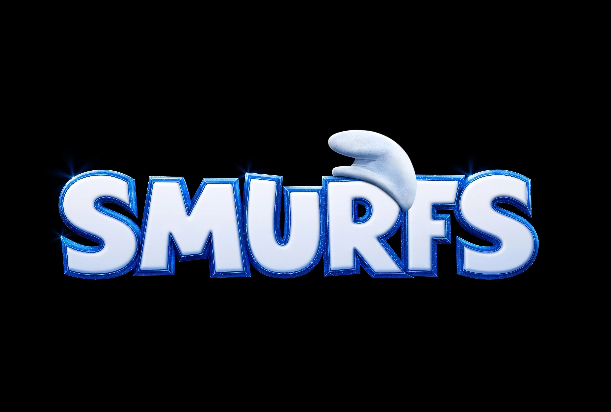
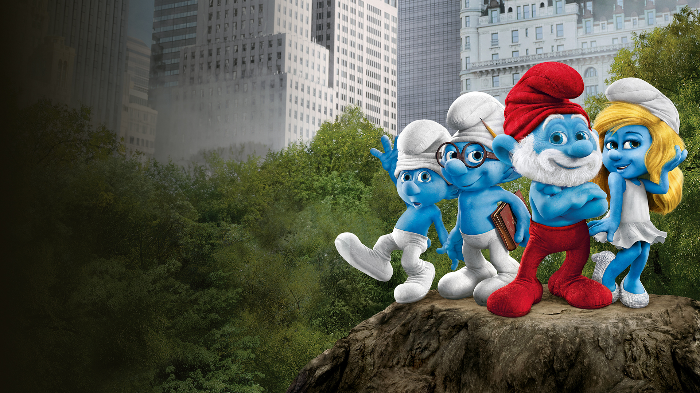
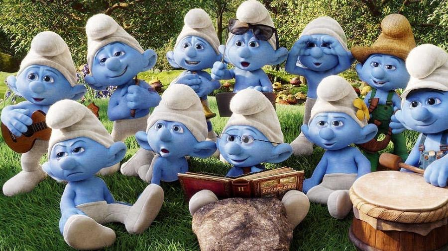
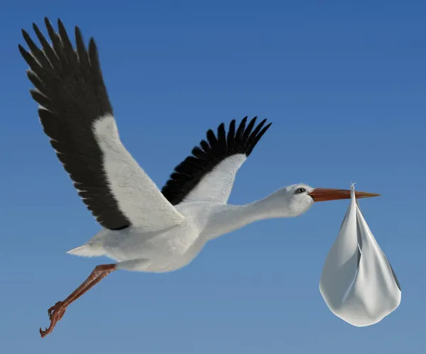

O FILME SMURFS

O QUE É A VERDADEIRA HISTÓRIA DOS SMURFS?
Diferentemente de muitos personagens que conhecemos e que são de origem americana, os Smurfs são europeus.
Peyo era belga e criava quadrinhos para públicos de países diferentes – França e Holanda.
O nome “Schtroumpfs” foi criado para os franceses e teve sua adaptação para os holandeses
QUAI SÃO AS CARACTERÍSTICAS DOS SMURFS?
Os Smurfs são uma espécie humanoíde de pequeninos gnomos azuis (Com cerca de três maçães de altura).
Atualmente eles residem na Vila Smurf, na série animada eles tiveram sua primeira aparição em "O Astro Smurf"

POR QUE OS SMURFS SÃO AZUL?
O criador destes personagens pensou em fazer os Smurfs verdes, mas a cor poderia se confundir com a das plantas
afinal, eles moram na floresta! O vermelho ficaria estranho.
Aí, ele escolheu o azul. Nos anos 1980, os Smurfs viraram desenho animado na TV.

COMO OS SMUFS SE REPRODUZEM?
No Universo Butterflies, a reprodução dos Smurfs é feita inteiramente por meio de entregas de cegonhas.

O QUE OS SMURFS COME?
As smurfberries aparecem apenas no desenho animado;
nos quadrinhos originais,
os Smurfs comem apenas as folhas da salsaparrilha.